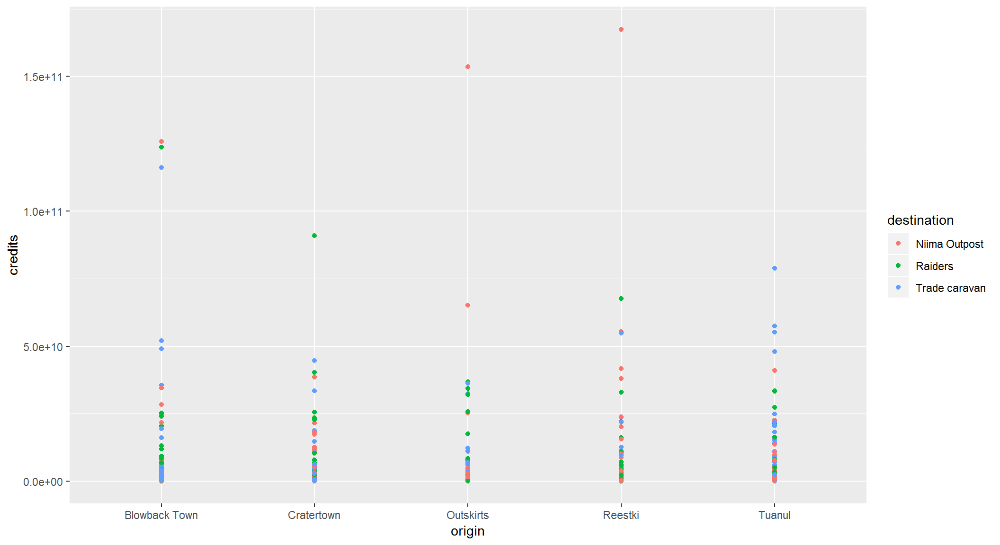
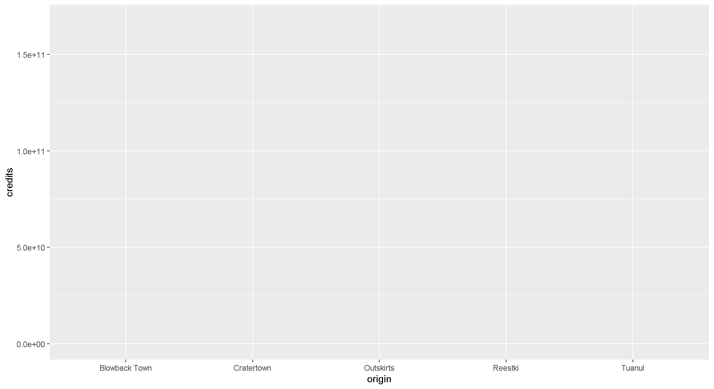
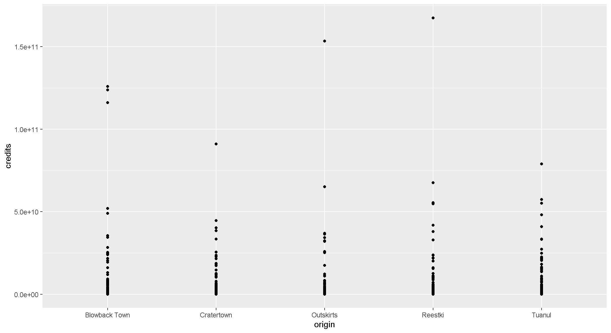

R Training | Day 3
Welcome back, Jedis!

Please connect to your droid
- Open the Start menu (Click the Windows logo on the bottom left of the screen)
- Select
Remote Desktop Connection - Enter
w7-your7digit#orR32-your7digit# - Press Connect
Open your RStudio project
- Open your project folder from last week
- Double click the .Rproj file to open RStudio
- Relax…
1 | Review
The script below loads the scrap data from the X-drive, cleans the data to make it easier to use, and then saves the new table as a CSV file. Feel free to review to see what we did and copy any helpful snippets.
Show script
library(readr)
library(dplyr)
# Read the original scrap data
scrap_full <- read_csv("X:/Agency_Files/Outcomes/Risk_Eval_Air_Mod/_Air_Risk_Evaluation/R/R_Camp/Intro to R/RTrain - Star Wars//data/starwars_scrap_jakku_full.csv")
# Change column names and units to all lowercase letters
scrap_full <- scrap_full %>%
rename_all(tolower)
# Convert all units to lowercase to make "tons" consistent
scrap_full <- scrap_full %>%
mutate(units = tolower(units))
# Read in the conversion data
convert <- read_csv("https://raw.githubusercontent.com/MPCA-air/RTrain/master/data/conversion_table.csv") %>%
select(-units)
# Join conversion table
scrap_full <- left_join(scrap_full, convert, by = c("salvage" = "item"))
# Add total price column and clean up names
scrap_full <- scrap_full %>%
mutate(amount_tons = ifelse(units == 'tons', amount, amount * pounds / 2000),
total_price = amount_tons * price_per_ton) %>%
filter(origin != "All") %>%
select(-pounds, -units, -amount) %>%
rename(items = salvage,
destination = dest)
# Drop all capital letters for easy typing
scrap_full <- scrap_full %>%
mutate(items = tolower(items),
origin = tolower(origin),
destination = tolower(destination))
# Save data back to X-drive as CSV
write_csv(scrap_full, "X:/Agency_Files/Outcomes/Risk_Eval_Air_Mod/_Air_Risk_Evaluation/R/R_Camp/Intro to R/RTrain - Star Wars/data/starwars_scrap_jakku_cleaned.csv")2 | Read cleaned scrap data
Today we’ll read data from the X-drive.
# Load packages
library(readr)
library(dplyr)
library(ggplot2)
# Read cleaned scrap data
clean_data <- read_csv("X:/Agency_Files/Outcomes/Risk_Eval_Air_Mod/_Air_Risk_Evaluation/R/R_Camp/Intro to R/RTrain - Star Wars/data/starwars_scrap_jakku_clean.csv")
# Get to know the data
names(clean_data)## [1] "items" "origin" "destination" "price_per_ton"
## [5] "amount_tons" "total_price"glimpse(clean_data)## Observations: 573
## Variables: 6
## $ items <chr> "electrotelescope", "atmospheric thrusters", "bu...
## $ origin <chr> "outskirts", "cratertown", "cratertown", "blowba...
## $ destination <chr> "trade caravan", "niima outpost", "raiders", "tr...
## $ price_per_ton <dbl> 849.79, 56.21, 1004.83, 597.85, 590.93, 1229.03,...
## $ amount_tons <dbl> 868.4280, 33978.1545, 644.7285, 1960.6650, 887.0...
## $ total_price <dbl> 737981.43, 1909912.06, 647842.54, 1172183.57, 52...summary(clean_data)## items origin destination
## Length:573 Length:573 Length:573
## Class :character Class :character Class :character
## Mode :character Mode :character Mode :character
##
##
##
## price_per_ton amount_tons total_price
## Min. : 29.15 Min. : 0.01 Min. : 5
## 1st Qu.: 314.23 1st Qu.: 238.99 1st Qu.: 128921
## Median : 629.28 Median : 1298.00 Median : 757656
## Mean :1010.85 Mean : 3724.23 Mean : 3483802
## 3rd Qu.:1329.05 3rd Qu.: 4678.44 3rd Qu.: 2631778
## Max. :7211.01 Max. :60116.67 Max. :837126153 | ggplot()
Diving deeper into making plots.
The ggplot() sandwich
The 3 ingredients in a ggplot
1. The base plot
ggplot(clean_data)
Remember to load the package!
library(ggplot2)2. The the X, Y aesthetics
The aesthetics assign the components from the data that you want to use in the chart. These also determine the dimensions of the plot.
ggplot(clean_data, aes(x = origin, y = total_price)) 
3. The layers or geometries
The geometries (abbreviated geom) are the things that actually fill the space. They are based on the aesthetics you provide in the ggplot() call by default; however, you can provide different aesthetics for each geometry if you need to.
ggplot(clean_data, aes(x = origin, y = total_price)) +
geom_point()
Pro-tip!
When you add more layers using
+remember to place it at the end of each line.
# This will work
ggplot(clean_data, aes(x = origin, y = total_price)) +
geom_point()
# So will this
ggplot(clean_data, aes(x = origin, y = total_price)) + geom_point()
# But this won't
ggplot(clean_data, aes(x = origin, y = total_price))
+ geom_point()Colors
Now let’s use color to show the destinations of the scrap
ggplot(clean_data, aes(x = origin, y = total_price, color = destination)) +
geom_point()Pro-tip!
An easy way to experiment with colors is to add layers like
scale_fill_brewerorscale_colour_brewerto your plot which will link to RcolorBrewer palettes so you can have accessible color schemes.
Bar charts
This is a too much detail. Let’s make a bar chart and add up the sales to make it easier to understand. Note that we use fill in aes() instead of color. If we used color, we’d get a colorful outline and grey (or is it gray?) bars.
ggplot(clean_data, aes(x = origin, y = total_price, fill = destination)) +
geom_col()
What if we want to make it easier to compare sales by destination for each origin? Let’s change the position of the bars. Remember, you can use help(geom_col) to learn about different options for the function. You can do the same with any other ggplot2 function.
ggplot(clean_data, aes(x = origin, y = total_price, fill = destination)) +
geom_col(position = "dodge")
Facet wrap
What if we want to make the chart less crowded? Let’s use the facet wrap function to put each origin on a separate chart.
ggplot(clean_data, aes(x = origin, y = total_price, fill = destination)) +
geom_col(position = "dodge") +
facet_wrap("destination")
Themes
You may not like the appearance of these plots. ggplot2 uses theme functions to change the appearance of a plot. Try some different themes out.
ggplot(clean_data, aes(x = origin, y = total_price, fill = destination)) +
geom_col(position = "dodge") +
facet_wrap("destination") +
theme_bw()
Labels
You can also change the axis and title labels using the labs function
ggplot(clean_data, aes(x = origin, y = total_price, fill = destination)) +
geom_col(position = "dodge") +
facet_wrap("destination") +
theme_bw() +
labs(title = "Scrap sales by origin and destination",
x = "Origin",
y = "Total sales")Drop scientific notation
What if we want to get rid of that ugly scientific notation? We can use options(scipen = 999). Note that this is a general setting in R and not part of the ggplot. Once you use options(scipen = 999) in your current session, you don’t have to use it again (like loading a package, you need to run the line each time you start a new R session).
options(scipen = 999)
ggplot(clean_data, aes(x = origin, y = total_price, fill = destination)) +
geom_col(position = "dodge") +
facet_wrap("destination") +
theme_bw() +
labs(title = "Scrap sales by origin and destination",
x = "Origin",
y = "Total sales $$")
What if we don’t like the zeros and want the labels in millions? Any ideas?
Exercise
We’ve covered how to do a scatterplot with geom_point and a bar chart with geom_col, but now we want to do a boxplot of the total price for each destination. But we’re not telling you which function to use. You’re on your own here. Feel free to add colors ,facet_wrap, theme, and labs to your boxplots. May the force be with you.
Save plots
You’ve (hopefully) had fun making all of these plots, so let’s learn to save them so we can cherish them forever. There’s a function called ggsave to do just that. How do we ggsave our plots? HELP! (no really, we can type help(ggsave))
# Get help
help(ggsave)
?ggsave
# Copy and paste the r code of your favorite plot here
ggplot(data, aes()) +
.... +
....
# Save your plot to a png file of your choosing
ggsave("your_results_folder/plot_name.png")Pro-tip!
What if you don’t want to save just the last plot you’ve made? Instead, you want to make a plot and save it for later.
# The ggplot you want to save
my_plot <- ggplot(...)
# The name of the file the chart will be saved to.
where_to_save_it <- "___.png"
# Save it!
ggsave(filename = where_to_save_it, plot = my_plot)In a future workshops we’ll show how to create a ton of plots at once and save them all in a folder so you’ll be able to generate a giant PDF book of all your beautiful plots. You could even make it into a book for your coffee table.
Learn more about saving plots: http://stat545.com/
4 | Glossary
Table of aesthetics
| aes() | |
|---|---|
x = |
|
y = |
|
alpha = |
|
fill = |
|
color = |
|
size = |
|
linetype = |
Table of geoms


Table of themes
You can customize the look of your plot by adding a theme() function.

5 | Questions
- How to modify the gridlines behind your chart?
- Try the different themes at the end of this lesson:
theme_light()ortheme_bw(). - Or modify the color and size with
theme(panel.grid.minor = element_line(colour = "white", size = 0.5)). - There’s even
theme_excel()
- Try the different themes at the end of this lesson:
- How do you set the x and y scale manually?
- Here is an example with a scatter plot:
ggplot() + geom_point() + xlim(beginning, end) + ylim(beginning, end) - Warning: Values above or below the limits you set will not be shown. This is another great way to lie with data.
- Here is an example with a scatter plot:
- How do you get rid of the legend if you don’t need it?
geom_point(aes(color = facility_name), show.legend = FALSE)- The R cookbook shows a number of ways to get rid of legends: http://www.cookbook-r.com/Graphs/Legends_(ggplot2)/
- I only like dashed lines. How do you change the linetype to a dashed line?
geom_line(aes(color = facility_name), linetype = "dashed")- You should also try
"dotted"and"dotdash", or maybe"twodash"
- How many colors are there in R? How does R know
hotpinkis a color?- There is an R color cheatsheet: https://www.nceas.ucsb.edu/~frazier/RSpatialGuides/colorPaletteCheatsheet.pdf
- As well as some basic color names here: http://www.r-graph-gallery.com/42-colors-names/
library(viridis)provides some great default color palettes for charts and maps.- This web tool will give you palette ideas and color Hex numbers: http://colorbrewer2.org/#type=sequential&scheme=BuGn&n=3
- What are some handy keyboard shortcuts in R? How do I find them?
- There is a shortcut cheat sheet online: https://www.rstudio.com/wp-content/uploads/2016/01/rstudio-IDE-cheatsheet.pdf
- Or in RStudio, you can go to Help > Keyboard Shortcuts Help
6 | Your turn
Let’s start applying what we’ve learned. Choose one of the paths below to put your new hard-earned R skills to use. When you’re feeling ready, choose the Grand Moff path and begin exploring some of your own data.
Explore the scrap and salvage economy on Jakku.
Media: solid waste
Planet: Jakku
Study the effects of jet-fuel on Porg reflexes.
Media: biological
Planet: Ahch-To
Travel back to Earth to discover your own data set.
Media: all
Planet: Earth